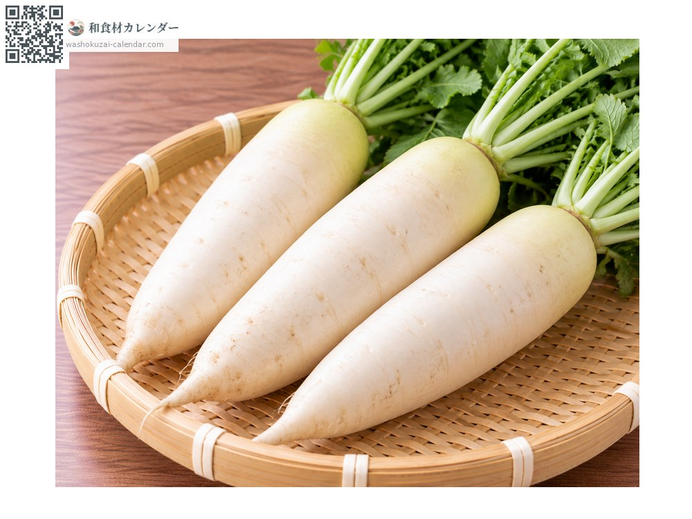
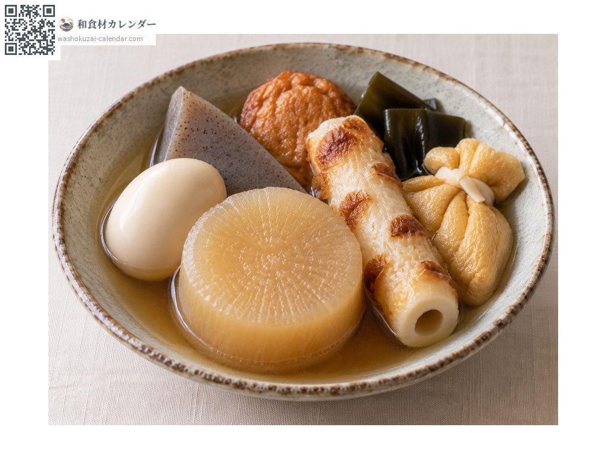
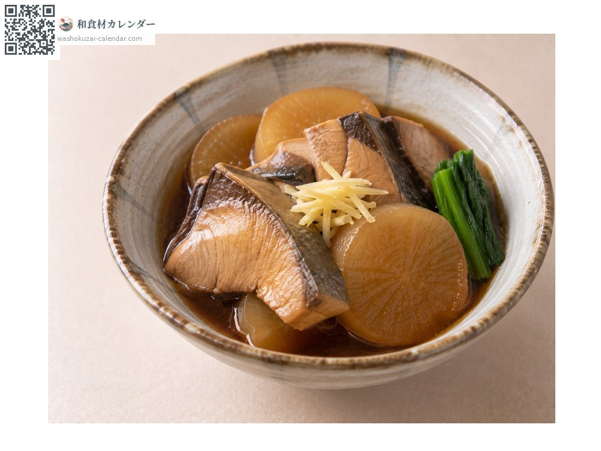
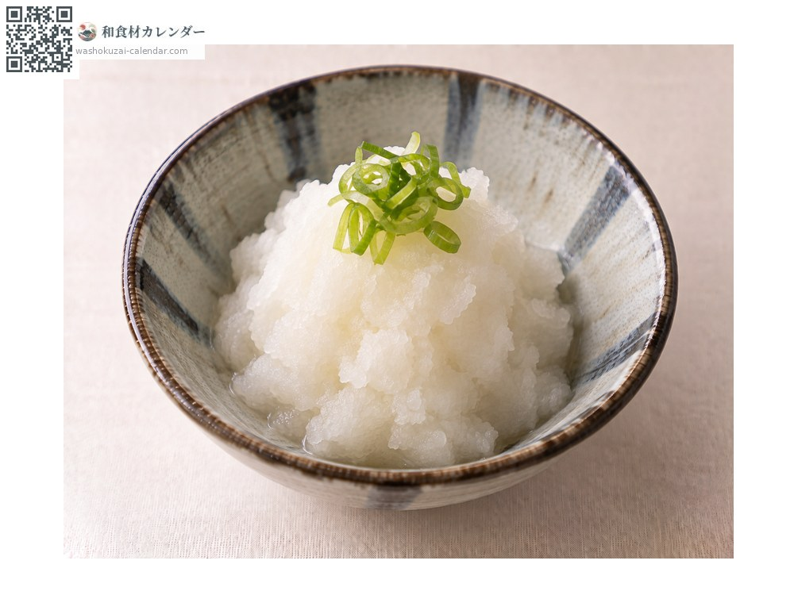
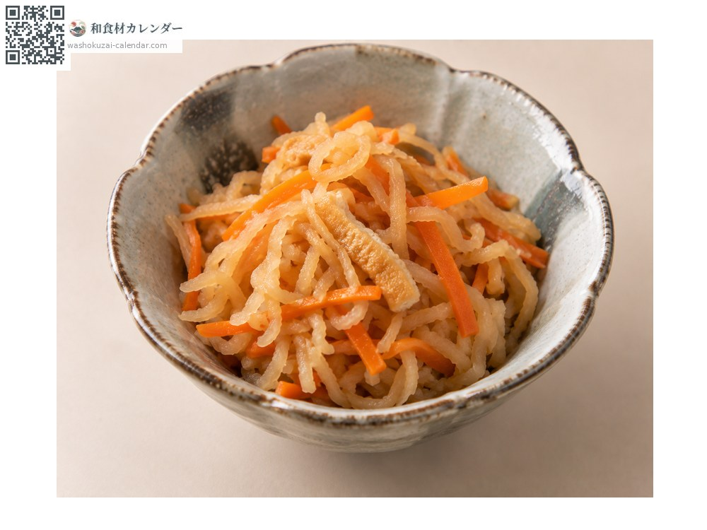

蔬菜
白萝卜
ダイコン だいこん daikon
别名daikon
应季时期为1月、2月、11月、12月

应季时期
1月
2月
3月
4月
5月
6月
7月
8月
9月
10月
11月
12月
应季有供应
烹饪方法

关东煮
先削边角并焯水过再炖。

鰤鱼炖白萝卜
与鱼同炖才会入味。

白萝卜泥
越靠近尾端越辣。

萝卜干丝炖煮
晒干以提高保存性。
挑选方法
拿起来沉、外皮紧绷。带叶的话叶子要有生气。
保存方法
保存前先切掉叶子，否则叶子会吸走水分。用报纸包好冷藏。
主要产地
小知识
上段较甜，越往尾端越辣。沙拉用上段，磨泥用尾端。